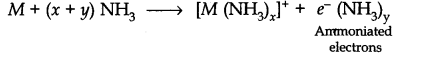
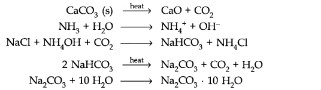
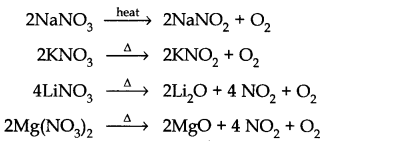
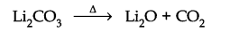
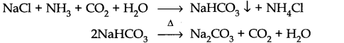
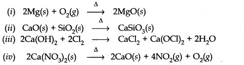
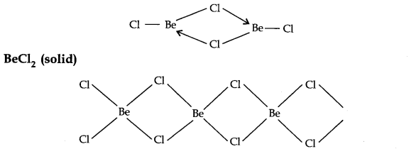
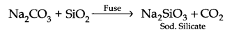
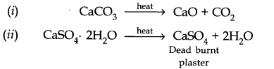

NCERT Solutions for Class 11 Chemistry Chapter 10 The s-Block Elements
Topics and Subtopics in NCERT Solutions for Class 11 Chemistry Chapter 10 The s-Block Elements:
| Section Name | Topic Name |
| 10 | The s-Block Elements |
| 10.1 | Group 1 Elements: Alkali Metals |
| 10.2 | General Characteristics of the Compounds of the Alkali Metals |
| 10.3 | Anomalous Properties of Lithium |
| 10.4 | Some Important Compounds of Sodium |
| 10.5 | Biological Importance of Sodium and Potassium |
| 10.6 | Group 2 Elements : Alkaline Earth Metals |
| 10.7 | General Characteristics of Compounds of the Alkaline Earth Metals |
| 10.8 | Anomalous Behaviour of Beryllium |
| 10.9 | Some Important Compounds of Calcium |
| 10.10 | Biological Importance of Magnesium and Calcium |
NCERT Solutions Class 11 ChemistryChemistry Lab ManualChemistry Sample Papers
NCERT Class 11 Chemistry Textbook Solved Questions
Question 1. What are the common physical and chemical features of alkali metals?
Answer: Physical properties of alkali metals:
- Alkali metals have low ionization enthalpies.
- Alkali metals are highly electropositive in nature.
- Alkali metals exhibit +1 oxidation states in their compounds.
- Alkali metals impart characteristic colours to the flame.
Chemical properties of alkali metals:
- Alkali metals are highly reactive in nature.
- Alkali metals hydroxides are highly basic in nature.
- Alkali metals dissolve in liquid ammonia to form blue and conducting solution.
Question 2. Discuss the general characteristics and gradation in properties of alkaline earth metals.
Answer:
- Atomic size goes on increasing down the group.
- Ionisation energy goes on decreasing down the group.
- They are harder than alkali metals.
- They are less electropositive than alkali metals.
- Electropositive character increases on going down the group.
More Resources for CBSE Class 11
- NCERT Solutions
- NCERT Solutions Class 11 Physics
- NCERT Solutions Class 11 Chemistry
- NCERT Solutions Class 11 Biology
- NCERT Solutions Class 11 Biology
- NCERT Solutions Class 11 Hindi
- NCERT Solutions Class 11 English
- NCERT Solutions Class 11 Business Studies
- NCERT Solutions Class 11 Accountancy
- NCERT Solutions Class 11 Psychology
- NCERT Solutions Class 11 Entrepreneurship
- NCERT Solutions Class 11 Indian Economic Development
- NCERT Solutions Class 11 Computer Science
Question 3. Why are alkali metals not found in nature?
Answer: Alkali metals are highly reactive in nature. That’s why they always exist in combined state in nature.
Question 4. Find out the oxidation state of sodium in Na2O2.
Answer: Let x be the oxidation state of Na in Na2O2 2x + 2 (-1) = 0 2x – 2 = 0 2x = 2 x = +1.
Question 5. Explain why is sodium less reactive than potassium.
Answer: It is because ionization enthalpy ∆Hi of potassium = 419 kJ mol -1.
Ionization enthalpy of sodium = 496 KJ mol. Since Ionization enthalpy of potassium is less than that of sodium, potassium is more reactive than sodium.
Question 6. Compare the alkali metals and alkaline earth metals with respect to (i) ionization enthalpy, (ii) basicity of oxides, (iii) solubility of hydroxides.
Answer: (i) Ionization enthalpy. Because of high nuclear charge the ionization enthalpy
of alkaline earth metals are higher than those of the corresponding alkali metals.
(ii) Basicity of oxides. Basicity of oxides of alkali metals are higher than that of alkaline earth metals.
(iii) Solubility of hydroxides of alkali metals are higher than that of alkaline earth metals. Alkali metals due to lower ionization enthalpy are more electropositive than the corresponding group 2 elements.
Question 7. In what ways lithium shows similarities to magnesium in its chemical behaviour?
Answer:
- Both react with nitrogen to form nitrides.
- Both react with 02 to form monoxides.
- Both the elements have the tendency to form covalent compounds.
- Both can form complex compounds.
Question 8. Explain why can alkali and alkaline earth metals not be obtained by chemical reduction method.
Answer: Alkali and alkaline earth metals are themselves better recucing agents, and reducing agents better than alkali metals are not available. That is why these metals are not obtained by chemical reduction methods.
Question 9. Why are potassium and caesium, rather than lithium used in photoelectric cells?
Answer: Potassium and caesium have much lower ionization enthalpy than that of lithium. As a result, these metals easily emit electrons on exposure to light. Due to this, K and Cs are used in photoelectric cells rather than lithium.
Question 10. When alkali metal dissolves in liquid ammonia, the solution can acquire different colours. Explain the reason for this type of colour change.
Answer: Alkali metals dissolve in liquid ammonia and give deep blue solutions which are conducting in nature because ammoniated electrons absorb energy in the visible region of light and impart blue colour.

Question 11. Beryllium and magnesium do not give colour to flame whereas other alkaline earth metals do so. Why?
Answer: Due to small size, the ionization enthalpies of Be and Mg are much higher than those of other alkaline earth metals. Therefore, a large amount of energy is needed to excite their valence electron, and that’s why they do not impart colour to the flame.
Question 12. Discuss the various reactions that occur in the Solvay process.
Answer:

Question 13. Potassium carbonate cannot be prepared by Solvay process. Why?
Answer: Potassium carbonate being more soluble than sodium bicarbonate does not get precipitated when CO2 is passed through a concentrated solution of KCl saturated with ammonia.
Question 14. Why is Li2CO3 decomposed at a lower temperature whereas Na2CO3 at higher temperature?
Answer: Li2CO3 is a covalent compound whereas Na2CO3 is an ionic compound. Therefore, Lattice energy of Na2CO3 is higher than that of Li2CO3. Thus, LiCO3 is decomposed at a lower temperature.
Question 15. Compare the solubility and thermal stability of the following compounds of the alkali metals with those of the alkaline earth metals.
(a) Nitrates (b) Carbonates (c) Sulphates
Answer: (a) Nitrates of both group 1 and group 2 elements are soluble in water because hydration energy is more than the lattice energy.
Nitrates of both group 1 and group 2 elements are thermally unstable but they decompose differently except LiCO3 e.g.

(b) Carbonates of group 1 elements are soluble in water except Li2CO3 They are also thermally stable except Li2CO3

Group 2 carbonates are insoluble in water because their Lattice energy are higher than hydration energy.
Thermal stability of carbonates of group 2 increases down the group because Lattice energy goes no increasing due to increase in ionic character.
(c) Sulphates of group 1 are soluble in water except Li2SO4. They are thermally stable.
Solubility of sulphates of group 2 decreases down the group because Lattice energy dominates over hydration energy.
Sulphates of group 2 elements are thermally stable and increasing down the group due to increases in Lattice energy.
Question 16. Starting with sodium chloride how would you proceed to prepare.
(i) Sodium metal (ii) Sodium hydroxide
(iii) Sodium peroxide (iv) Sodium carbonate?
Answer: (i) Sodium metal is manufactured by electrolysis of a fused mass of NaCl 40% and CaCl2 60% in Down’s cell at 873 K, using iron as cathode and graphite as anode. Na is liberated at the cathode.
At cathode:
Na+ + e– —–> Na (l)
At anode:
2Cl– (melt) ——-> Cl2 (g) + 2e–.
(ii) Sodium hydroxide is manufactured by electrolysis of an aqueous solution of NaCl (brine) in Castner-Kellner cell.
At cathode:
Na+ + e– —–> Na
2Na + Hg ——->Na – Hg + 2H20
2Na- Hg + 2H20——>2NaOH +H2 +Hg
At anode:
Cl– – e– ——->Cl
Cl + Cl——–>Cl2
(iii) Sodium peroxide:
4Na + 02 2Na2O + 02
(iv)Sodium carbonate is obtained by Solvay ammonia process.

Question 17. What happens when (i) magnesium is burnt in air, (ii) Quick lime is heated with silica (iii) chlorine reacts with slaked lime (iv) calcium nitrate is heated?
Answer:

Question 18. Describe two important uses of each of the following: ,
(i) caustic soda (ii) sodium carbonate (iii) quick lime
Answer: (i) Caustic soda
(a) It is used in the manufacturing of soap paper, artificial silk etc.
(b) It is used in textile industries.
(ii) Sodium carbonate
(a) Used in the softening of water, for laundry and cleaning purposes.
(b) It is used in glass manufacturing.
(iii) Quick lime
(a) It is used in the preparation of bleaching powder.
(b) Used in the purification of sugar and in the manufacturing of cement.
Question 19. Draw the structure of (i) BeCl2 (vapour), (ii) BeCl2 (solid).
Answer: BeCl2 (vapour)
In the vapour state, it exists as a chlorobridged dimer.

Question 20. The hydroxides and carbonates of sodium and potassium are easily soluble in water while the corresponding salts of magnesium and calcium are sparingly soluble in water. Explain.
Answer: Since group 1 hydroxides and carbonates due to large size contain higher hydration energy than the lattice energy so, they are easily soluble in water. Whereas, in magnesium and calcium due to small size their lattice energy dominates over hydration energy they are sparingly soluble in water.
Question 21. Describe the importance of the following:
(i) Limestone (ii) Cement (iii) Plaster of Paris.
Answer: Limestone:
- Extensively used in the manufacturing of high quality paper.
- Used as mild abrasive in toothpaste.
- As a filler in cosmetics.
- Used as an antacid.
Cement:
- An important building material.
- Used in concrete and reinforced cement.
Plaster of Paris:
- Used in plasters.
- In dentistry, in ornamental work for making statues.
Question 22. Why are lithium salts commonly hydrated and those of the other alkali metal ions usually anhydrous?
Answer: Due to smallest size, Li+ can polarize water molecules easily than the other alkali metal ions.
Question 23. Why is LiF almost insoluble in water whereas LiCl soluble not only in water but also in acetone?
Answer: It is due to high lattice energy of LiF as compared to LiCl.
LiCl is soluble in water because its hydration energy is higher than its lattice energy.
Question 24. Explain the significance of sodium, potassium, magnesium and calcium in biological fluids.
Answer: Sodium ions:
- Na+ ions participate in the transmission of nerve signals, in regulating the flow of water across cell membranes.
- In the transport of sugars and amino acids into cell.
Potassium ions:
- They activate many enzymes.
- Participate in the oxidation of glucose to produce ATP.
Magnesium ions:
- All enzymes that utilise ATP in phosphate transfer require magnesium as a cofactor.
- Mg is the main pigment for the absorption of light in plants.
Calcium:
- Ca2+ ions are present in bones.
- plays important roles in neuromuscular function.
Question 25. What happens when
(i) Sodium metal is dropped in water?
(ii) Sodium metal is heated in free supply of air?
(iii) Sodium peroxide dissolves in water?
Answer: (i) 2Na + 2H2O ——–> 2NaOH + H2
(ii) 2Na + O2 ———> Na2O2
(iii) Na2O2 + 2H20 ———> 2NaOH + H2O2
Question 26. Comment on each of the following observations:
(a) The mobilities of the alkali metal ions in aqueous solution are Li+ < Na+ <K+ < Rb+ < Cs+
(b) Lithium is the only alkali metal to form a nitride directly.
(c) Ee for M2+ (aq) + 2e– —> M(s) (where M = Ca, Sr, or Ba) is nearly constant.
Answer: (a) Smaller the size of the ion, more highly it is hydrated and hence greater is the mass of the hydrated ion and thus the ionic mobility become lesser. The extent of hydration decreases in the order.
Li+ < Na+ <K+ < Rb+ < Cs+
Thus the mobility of Cs+ will be the highest.
(b) Due to its smaller size lithium can form nitride directly.
(c) It is because reduction potential depends upon sublimation energy, ionisation energy and hydration energy. Their resultant is almost constant for these ions.
Question 27. State as to why
(a) a solution of Na2CO3 is alkaline?
(b) alkali metals are prepared by electrolysis of their fused chlorides?
(c) Sodium is found to be move useful than potassium?
Answer: (a) Na2CO3 is a salt of a weak acid, carbonic acid (H2CO3) and a strong base NaOH. Thus it undergoes hydrolysis to produce strong base NaOH and its aqueous solution is alkaline in nature.
Na2CO3(s) + H2O(l)———–>2NaOH
(b) Because the discharge potential of alkali metals is much higher than that of hydrogen, therefore when the aqueous solution of any alkali metal chloride is subjected to electrolysis, H2, instead of the alkali metal, is produced at the cathode. Therefore alkali metals are prepared by electrolysis of their fused chlorides.
(c) Since potassium is move reactive than sodium and it is found in nature to a less extent than Na, sodium is found to be more useful.
Question 28.Write balanced equations for reactions between.
(a) Na2O2 and water
(b) KO2 and water
(c) Na2O and CO2
Answer: (a) Na2O2 + 2H2O ——-> 2Na0H + H2O2
(b) 2KO2 + 2H2O ———-> 2K0H + O2+ H2O2
(c) Na2O+ CO2 ———–>Na2CO3
Question 29. How would you explain the following observations?
(i) BeO is almost insoluble but BeSO4 is soluble in water.
(ii) BaO is soluble but BaSO4is insoluble in water.
(iii) Lil is more soluble than KI in ethanol.
Answer: (i) Lattice energy of BeO is compartively higher than the hydration energy. Therefore, it is almost insoluble in water. Whereas BeSO4 is ionic in nature and its hydration energy dominates the lattice energy.
(ii) Both BaO and BaSO4 are ionic compounds but the hydration energy of BaO is higher than the lattice energy therefore it is soluble in water.
(iii) Since the size of Li+ ion is very small in comparison to K+ ion, it polarises the electron cloud of I– ion to a great extent. Thus Lil dissolves in ethanol more easily than the KI.
Question 30. Which of the alkali metal is having least melting point?
(a) Na (b) K (c) Rb (d) Cs
Answer: Size of Cs is the biggest thus, its melting point is the lowest, (d) is correct.
Question 31. Which one of the following alkali metals give hydrated salts?
(a) Li (b) Na (c) K (d) Cs
Answer: Li+ is the smallest. Thus, it has the highest charge density and hence attracts the water molecules more strongly.
Question 32. Which one of the following alkaline earth metal carbonates is thermally most stable?
(a) MgCO3 (b) CaCO3 (c) SrCO3 (d) BaCO3
Answer: (d) BaCO3
MORE QUESTIONS SOLVED
NCERT Solutions for Class 11 Chemistry Chapter 10 Very Short Answer Type Questions
Question 1. Name the alkali metal which shows diagonal relationship with magnesium?
Answer: Li.
Question 2. Why alkali and alkaline earth metals cannot be obtained by chemical reduction method?
Answer: Because alkali and alkaline earth metals are themselves stronger reducing agents than the majority of other reducing agents.
Question 3. Name the compounds used for the manufacture of washing soda by Solvay process.
Answer: NaCl, CaCO3 and NH3.
Question 4. Which electrolyte is used to obtain sodium in Castner’s process?
Answer: Fused NaOH.
Question 5. What happens when crystals of washing soda are exposed to air?
Answer: Monohydrate (Na2CO3– H2O) is formed as a result of efflorescence.
Question 6. Name the alkaline earth metals whose salt do not impart colour to a non-luminous flame.
Answer: Beryllium does not impart colour to a non-luminous flame.
Question 7. What is dead burnt plaster?
Answer: It is anhydrous calcium sulphate (CaSO4).
Question 8. What is Quick lime? What happens when it is added to water?
Answer: CaO is quick lime. When it is added to water, Ca(OH)2 is formed.
Question 9. Arrange the following in the increasing order of solubility in water.
MgCl2, CaCl2, SrCl2, BaCl2
Answer: BaCl2 < SrCl2 < CaCl2 <MgCl2
Question 10. Give the chemical formula of Epsom salt.
Answer: MgSO4,7H2O
Question 11. How would you prepare sodium silicate from silica?
Answer:

Question 12. What happens when sodium metal is heated in free supply of air?
Answer: Sodium peroxide is formed.
2Na + O2 ——-> Na2O2
Question 13. What is the general name for elements of group 1 ?
Answer: Alkali metals.
Question 14. Why are alkali metals soft?
Answer: Since the atoms of alkali metals have bigger kernels and smaller number of valence electrons, the metallic bonds in them are very weak and hence are soft.
Question 15. What do you mean by diagonal relationship in periodic table?
Answer: The resemblance of the first element of second period with diagonally situated element of neighbouring element is called diagonal relationship.
Question 16. Why is BeCl2 soluble in organic solvent?
Answer: Since BeCl2 is a covalent compound it is soluble in organic solvent.
Question 17. Why do alkali metals give characteristic flame colouration?
Answer: Alkali metals due to low ionization energy absorb energy from visible region to radiate complementary colour.
Question 18. Why is the solution of alkali metals in liquid ammonia conducting in nature?
Answer: Due to ammoniated electrons and cations.
Question 19. Which is more basic NaOH or Mg(OH)2?
Answer: NaOH is more basic.
Question 20. Which alkaline earth metals do not impart colour to the flame?
Answer: Be and Mg.
Question 21. What is soda ash?
Answer: Soda ash is anhydrous sodium carbonate (Na2CO3).
NCERT Solutions for Class 11 Chemistry Chapter 10 Short Answer Type Questions
Question 1. Why are alkali metals always univalent? Which alkali metal ion forms largest hydrated ion in aqueous solution?
Answer: They are always univalent because after losing one electron, they aquire nearest inert gas configuration.Li+ forms largest hydrated cations because it has the highest hydration energy.
Question 2. What is the effect of heat on the following compounds (Give equations for the reactions)? (i) CaC03 (ii) CaSO4 2H2O
Answer:

Question 3. Explain the following:
(a) Lithium iodide is more covalent than lithium fluoride.
(b) Lattice enthalpy of LiF is maximum among all the alkali metal halides.
Answer: (a) According to Fazan’s rule, Li+ ion can polarise l– ion more than the F– ion due to bigger size of the anion. Thus Lil– has more covalent character than LiF.
(b) Smaller the size (internuclear distance), more is the value of Lattice enthalpy since internuclear distance is expected to be least in the LiF.
Question 4. Write the chemical formula of the following compounds.
(i) Chile salt petre (ii) Marble (iii) Brine
Answer:(i) NaNO3 (ii) CaCO3 (iii) NaCl.
Question 5. Explain the following:
(a) Why Cs is considered as the most electropositive element?
(b) Lithium cannot be used in making photoelectric cells.
(c) Lithium does not form alums.
Answer: (a) Due to its lowest ionization energy, Cs is considered as the most electropositive element.
(b) Lithium cannot be used in making photoelectric cells because out of all the alkali metals it has highest ionization energy and thus cannot emit electrons when exposed to light.
(c) Due to small size, lithium does not form alums.
Question 6. (a) What makes lithium to show properties uncommon to the rest of the alkali metals?
(b) When is a cation highly polarising? Which alkali metal cation has the highest polarising power?
Answer: (a) The unusual properties of lithium as compared to other alkali metals is due to its exceptionally small size of atom and its ion and its high polarising power.
(b) A cation is highly polarising if its charge/ size ratio is very high.
Li+ ion has the highest polarising power.
Question 7. Why are ionic hydrides of only alkali metals and alkaline earth metals are known? Give two examples.
Answer: Alkali metals and alkaline earth metals are most electropositive due to low ionization ethalpy therefore they form ionic hydrides, e.g. NaH, KH and CaH2
Question 8. Why does the solution of alkali metals becomes blue in liquid ammonia? Give the chemical equation also.
Answer: The blue colour of the solution is due to ammoniated electron which absorbs energy in the visible region of light and imparts blue colour.
Na (am) + e- (am) + NH3(l) ——–> NaNH2(am) + —1/2 H2(g)
Question 9. Give the important uses of the following compounds.
(i) NaHCO3 (ii) NaOH
Answer:
(i) Uses of NaHCO3
- It is used in fire extinguisher.
- It is mild antiseptic for skin infections.
- It is used as antacid.
(ii)Uses of NaOH
- It is used in soap industry.
- It is used in textile industry.
- It is used as reagent in laboratory.
- It is used in absorbing poisonous gases.
Question 10. What is the mixture of CaC2 and N2 called? How is it prepared?
Answer: It is called Nitrolime.
It is prepared by heating CaC2 with N2 at high temperature.
CaC2 + N2 ——–> CaCN2 + C
NCERT Solutions for Class 11 Chemistry Chapter 10 Long Answer Type Questions
Question 1. (a) Compare four properties of alkali metals and alkaline earth metals.
(b) What happens when alkali metals are dissolved in ammonia?
(c) MgCl2 is electrolysed.
Answer: (a)

At cathode:
Mg2+(aq) + 2e– ———-> Mg(s)
At anode:
2Cl-(aq) – 2e- ———> Cl2(g)
Question 2. State as to why
(a) Alkali metals show only +1 oxidation state. (b) Na and K impart colour to the flame but Mg does not.(c) Lithium on being heated in air mainly forms the monoxide and not the peroxide.(d) Li is the best reducing agent in aqueous solution.
Answer: (a) Alkali metals have low ionization enthalpies.
They have a strong tendency to lose 1 electron to form unipositive ions. Thus they show an oxidation state of +1 and are strongly electropositive.
(b) Valence electrons of alkali metals like Na and K easily absorb energy from the
flame and are excited to higher energy levels. When these electrons return to the ground state, the energy is emitted in the form of light.
Magnesium atom has small size so electrons are strongly bound to the nucleus. [ Thus they need large amount of energy for excitation of electrons to higher
energy levels which is not possible in bunsen flame.
(c)Due to the small size of Li+ it has a strong positive field which attracts the negative charge so strongly that it does not permit the oxide ion, 02- to combine with another oxygen atom to form peroxide ion.
(d)Since, among alkali metals, lithium has the most negative electrode potential (E° = -3.04 V) so, it is the strongest reducing agent in the aqueous solution.
NCERT Solutions for Class 11 Chemistry Chapter 10 Multiple Choice Questions
Question 1. The reducing property of alkali metals follows the order
(a) Na < K < Rb < Cs < Li (b) K < Na < Rb < Cs < Li
(c) Li < Cs < Rb < K < Na (d) Rb < Cs < K < Na < Li
Question 2. Which of the following is the least thermally stable?
(a) MgCO3 (b) CaCO3 (c) SrCO3 (d)BeCO3
Question 3. When heated to 800°C, NaN03 gives
(a)Na + N2 + O2 (b) NaNO2 + O2 (c) Na2O + O2 + N2 (d)NaN3 + O2
Question 4. Lithium shows a diagonal relationship with
(a) sodium (b) silicon (c) nitrogen (d)magnesium
Question 5. In the Solvay process
(a) an ammoniacal brine solution is carbonated with CO2, forming NaHCO3 which on decomposition at 150°C produces Na2CO3
(b) a sodium amalgum reacts with water to produce NaOH which gives Na2CO3 on reacting with CO2
(c) A brine solution is made to react with BaCO3 to produce Na2CO3
(d) all of the above
Question 6. The oxide of which of the following metals is amphoteric?
(a) Pb (b) Mg (c) Ca (d) Al
Question 7. Alkaline earth metals are
(a) more reactive (b) less reducing
(c) more oxidizing (d) less basic than alkali metals
Question 8. Which of the following is not a peroxide?
(a) KO2(b) CrO5(c) Na2O2 (d) BaO2
Question 9. Hydrides as well as halides of alkaline earth metals tend to polymerize
(a) Sr (b) Ca (c) Be (d) Mg
Question 10. Which of the following is used in photoelectric cells?
(a) Na (b) K (c) Li (d) Cs
Answer: 1. (a) 2. (d) 3. (c) 4. (d) 5. (a)
6. (a) and (d) 7. (b) and (d) 8. (a) 9. (c) 10. (d)
NCERT Solutions for Class 11 Chemistry Chapter 10 HOTS Questions
Question 1. Why are alkali metals soft and have low melting points?
Answer: Alkali metals have only one valence electron per metal atom. As a result, the binding energy of alkali metal ions in the close-packed metal lattices are weak. Therefore, these are soft and have low melting point.
Question 2. Which out of the following can be used to store an alkali metal?
H2O, C2H5OH and Benzene
Answer: Benzene can be used to store an alkali metal because other substances react with alkali metal as:
Na + H2O —–> NaOH + 1/2H2
Na + C2H5OH ——–> C2H5ONa + ½ H2
Question 3. Potassium carbonate cannot be prepared by Solvay process. Why?
Answer: This is due to the reason that potassium bicarbonate (KHCO3) formed as an intermediate (when CO2 gas is passed through ammoniated solution of potassium chloride) is highly soluble in water and cannot be separated by filtration.
Question 4. The hydroxides and carbonates of sodium and potassium are easily soluble in water while the corresponding salts of magnesium and calcium are sparingly soluble in water. Explain.
Answer: All the compounds are crystalline solids and their solubility in water is guided by both lattice enthalpy and hydration enthalpy. In case of sodium and potassium compounds, the magnitude of lattice enthalpy is quite small as compared of sodium and potassium that are mentioned, readily dissolve in water. However, in case of corresponding magnesium and calcium compounds, the cations have smaller sizes and more magnitude of positive charge. This means that their lattice enthalpies are more as compared to the compounds of sodium and potassium. Therefore, the hydroxides and carbonates of these metals are only sparingly soluble in water.
Question 5. Why is LiF almost insoluble in water whereas LiCl soluble not only in water but also in acetone?
Answer: The low solubility of LiF in water is due to its very high lattice enthalpy (F– ion is very small in size). On the other hand, in lithium chloride (LiCl) the lattice enthalpy is comparatively very small. This means that the magnitude of hydration enthalpy is quite large. Therefore lithium chloride dissolves in water. It is also soluble in acetone due to dipolar attraction. (Acetone is polar in nature).